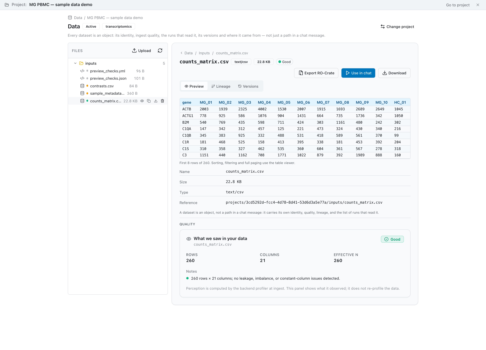

From any instrument and dataset to a reproducible, decision-ready result.
Search, run and read results for any bioinformatics task in one workspace.
Real connectors for sequencers, flow cytometers, LC-MS, plate readers, cryo-EM, liquid handlers and ELN/LIMS.
Literature, databases and a 4,210-workflow catalog, routed to the right method.
Cloud (AWS Batch / Nextflow) or on-prem, with QC gates and a closed loop that learns from each run.
Data stays in your environment; deterministic execution; versioned, traceable evidence.
The same loop, across every domain.
BioMate doesn't replace R's methods — it runs them. 1,000+ of its workflows are Bioconductor/R (DESeq2, limma, edgeR, Seurat, flowCore, survival). It replaces everything you build and maintain around them.
Honest boundary: for an expert bioinformatician doing bespoke, novel analysis, raw R gives more flexibility — BioMate's value is highest for non-coders, reproducibility & compliance, scale, and method routing.

Describe the goal in plain language; BioMate selects from 4,210 workflows and explains why.
Paste an accession; it resolves modality and the matching pipeline.
Grounded literature Q&A with real citations — not fabricated references.
Activity/SAR, structure & similarity search; FTO/patent for applicable domains.


Local / private deployment as the default; compute runs inside your estate.
Train and fine-tune on your own data.
The same input yields the same output at inference.
Scores shown as formulas and explanation columns; sources traceable.
Exploration in an evolution layer; production runs the accepted version, with a change record.
By team/project/person; two-way with ELN / compound library / LIMS.
One platform replaces many single-point tools; less compute outsourcing; pilot-before-full-run reduces wasted runs.
QC gates and auto-loop reduce rework.
Results write back to your systems.
Runs, QC and expert corrections accumulate as auditable knowledge.